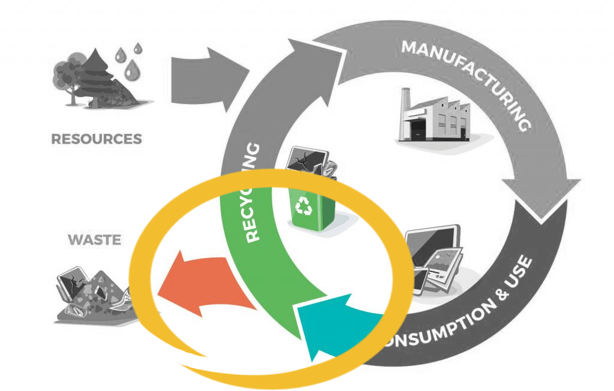
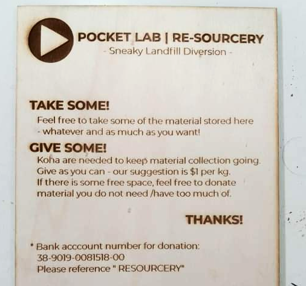

Re-sourcey :
Supporting local up-cycling
The setup of a platform enabling all sorts of materials to be diverted from landfill for the benefit of local makers.
The Basic Stuff
and
How to get involved
This project is now running, and we are always looking for people willing to donate material. Everyone is welcome to come pick some up at any time - donation appreciated to keep the material collection going.
Drop us a line using the form below - Many thanks!
Setting up the Re-sourcery
- February 2019 -
During the construction of a wooden geodesic dome, we witnessed that large amounts of good materials were thrown into the bin. It was a blessing for us scavengers, but as a city, it does not make sense to waste that much of it. A random visit to the recycling shop at the Waitakere refuse centre will provide anyone with a reality check that is hard to ignore :

The 5 metres-high stack of trashed wood at the refuse centre.
This eye-opener prompted some of us to visit Rollercoaster, a design studio in Kumeu. Their staff members had mentioned the potential to divert perfectly fine pieces of wood from the landfill. The fast-paced production cycle of the studio generates a constant amount of offcuts. These are unsuitable for the large-scale designs made there, but are potentially ideal for smaller projects.
Since our first visit, Rollercoaster staff members have been going out of their way to contact us when wood was available. And so the van has begun a fortnightly dance, going back and forth from the Pocket Lab to their studio, relocating hundreds of kilos of material closer to the city centre.
Donated offcuts from Rollercoaster
Soon after, the amount of wood started adding up, stacked under tarps outside, badly protected from the elements. All sheets were difficult to access, laying on top of each other, and the word-of-mouth inviting anyone to help themselves was a little too quiet to generate a healthy rotation. The initiative was calling for a little more planification to smoothly run, so a brainstorming began.
At this scale, without decision power at manufacturing stage, the ambition of the project was to slighlty shake the final cycle of products, offering an extra opportunity for re-use before the final recycling and trashing stage.

The sneaky add-on to make a dent in the universe of waste management
A platform was needed to reach out further than our close community. Perhaps a collaboration with the "Adopt a resource" initiative from EcoMatters was potentially going to do the hard communication work on our behalf.
Existing webpage to reach out future users
More practically, there was a need for a storage space to keep everything dry and easy to access. At the Pocket Lab, we did not have indoor space; therefore, a waterproof structure needed to be built from scratch. Looking for primary material, we were able to collect a large stack of pallets, thanks to the kind response from Solarcity, allowing us to help ourselves at their storage space.

Sourcing raw material for structural elements
These pallets have the particularity to possess a flat plywood top, which made it easier to enclose the storage space. We also had a few second-hand advertisment canvases, initially gathered for summer festivals and now getting dusty and lonely:

Sourcing raw material for the cover
It took a few sunny days to put together the physical space. A little extra design work was necessary to ensure the sheets of material were going to be easy to browse though and pick up :

The bottom structure
Sticking with our non-existent budget for material, we took on the generous offer of a Gribblehirst Hub member, donating some second-hands studs. They became the supporting structure of the rainproof cover:

Structure for the waterproof cover
The whole structure needed to fit in the very green landscape of Gribblehirst Park. To cover the obnoxious-looking canvas wrapped around the sides of the structure, bamboo mats - also upcycled - were used. We are now waiting for climbers to invade this vertical space and settle for good, merging the structure into the green landscape.
The whole structure was oriented so that this vertical green space is what people see when they enter the Commons.

Merging the structure within its green background
Using second-hand materials saved us thousands of dollars worth of purchase, making the project possible.
Blockroad
- March 2019 -
At the beginning of March, Gribblehirst Hub informed us that the Local Council had requested that all initiatives on the Commons had to stop stop immediately. The reasons for doing so were unclear to us. The project paused, waiting for the green lights to resume.
A Digital Opening
- September 2019 -
Finally the project started again. Using a laser cutter, we designed a sign to clarify to all users how to use the Resourcery :

The sign as it comes out of the laser cutter
Using social medias, emails, the "Adopt a Resource" webpage and other online platforms, we passed the message around. With Summer coming, we hope for that stash of wood to come handy to all weekend warriors in need of supplies - and give this sweet sweet material some use.
Meet the team
Below are the Members who took, or are taking part in this project :


Contributors, Friends and Supporters

Hackland is an independent, not for profit Hackspace not far from us, hosting the many inventions and tools of very creative people.
Through the "Adopt a resource" program, EcoMatters has supported our initiative.
Based in Auckland in Aotearoa New Zealand, EcoMatters is an established charitable trust formed in 2002, delivering environmental initiatives.

Rollercoaster is a design studio with many facets, working on events, exhibits, film sets and more. The company has been consistently donating offcuts of high quality, making it easy for us to divert them from the landfill.

Solarcity is the nation’s leading solar energy services company. The warehouse manager of Solarcity has offered us to upcycle a large amount of pallets that have become our main material to build the structure of the storage.

A bunch of humans dedicated to experimenting with the concept of locally productive, globally connected Fab-Cities at New Zealand scale.